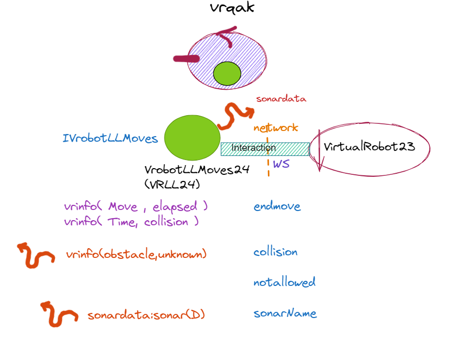

Vrqak24¶
Vogliamo realizzare un actor che funga da all’uso di un virtual robot.
A differenza di VrobotLLMoves24 (che è un POJO) il componente vrqak24.qak permette l’uso remoto del VirtualRobot23 attraverso l’invio di messaggi.
Per possibili , chiediamo a ChatGpt, ma chiediamogli anche la sua opinione specifica in merito.
Osserviamo inoltre che potremmo introdurre una evoluzione del POJO stesso, introducendo le nuove funzionalità qui soddisfatto riportate, come fatto in VrobotHLMoves24 (per un esempio d’uso si veda vrobotusagehl.qak).
Vrqak24-comandi¶
|
Ferma il robot |
|
Comando al robot di eseguire (in modo sincrono) una mossa M = w | a | d | h | p
|
|
Richiesta di movimento al robot con Il linguaggio aril MOVE = w | s | l | r | h | p
|
|
Richiesta di un movimeno step asincrono |
Vrqak24-step¶
Lo step asincrono viene gestito come segue:
si tiene traccia della rchiesta ponendo la variabile
doingAsynchStep = truesi invia al robot un comando di movimento in avanti per il tempo specificato
si analizza il messaggio inviato dal supporto per capire l’esito del comando asincorno
|
/*1*/State handleAsynchStep{
[# doingAsynchStep = true #]
onMsg( step:step(T)){
[# vr.forward(payloadArg(0).toInt()) #]
}
}
Transition t0
/*2*/whenMsg vrinfo -> handleVrinfoMsgReply
State handleVrinfoMsgReply{
onMsg( vrinfo : vrinfo(M,elapsed)){
if [# doingAsynchStep #]{
/*3*/ replyTo step with stepdone:stepdone(ok)
[# doingAsynchStep = false #]
}
else {replyTo cmd with cmddone:cmddone(elapsed)}
}
onMsg( vrinfo : vrinfo(T,collision)){
[# val T = payloadArg(0) #]
if [# doingAsynchStep #]{
/*4*/ replyTo step with stepfailed:stepfailed($T,collision)
[# doingAsynchStep = false #]
}
else {
replyTo cmd with cmdfailed : cmdfailed($T,collision)
}
}
}
Goto work
|
Vrqak24-percezioni¶
|  | Il servizio utilizza il supporto VrobotLLMoves24, di cui gestisce i seguenti messaggi:
|
{kind=link}
Osserviamo che il servizio vrqak percepisce gli eventi emessi da VrobotLLMoves24, ma questi eventi ai clienti del servizio, in quanto i contesti-qak di tali clienti (ammesso che ci siano) non sono noti al servizio stesso.
Perchè i clienti possano ricevere infromazioni demesse dai sonar dell’anìbiente WEnv, occorre .
Vrqak24-osservabilità¶
Il servizio costituisce una rispetto agli eventi sonardata.
Quando percepisce uno di tali eventi, emette (usando updateresource)
una stringa della forma:
sonardata(DISTANCE)
Questi compito viene eseguito dallo stato handleSonarData come segue:
State handleSonarData{
onMsg( sonardata : sonar(D) ){
[# var D = payloadArg(0) #]
[# val sonarEvent = "sonardata(" + D + ")" #]
updateResource [# "$sonarEvent" #]
updateResource [# "nonews" #] //per evitare che CoAP ripeta il dato
}
}
Transition t0 whenMsg vrinfo -> handleVrinfoMsgReply
Si noti che, per ogni evento sonardata percepito, la stringa che riporta la distanza rilevata
viene emessa solo una volta, in quanto seguita poi dalla emissione della stringa nonews
che un osservatore ignorerà.
Vrqak24-applicazioni¶
Si veda bw24proto2.qak
Si veda sonarbw24.qak
Vrqak24-verso basicrobot¶
Il servizio può costituire il punto di partenza per la realizzazione di un servizio più esteso, che includa anche la gestione di uno specifico robot fisico. (d’ora in poi denominato ).
In via preliminare, questo nuovo servizio si può impostare come mostrato nel modello basicrobot.qak.